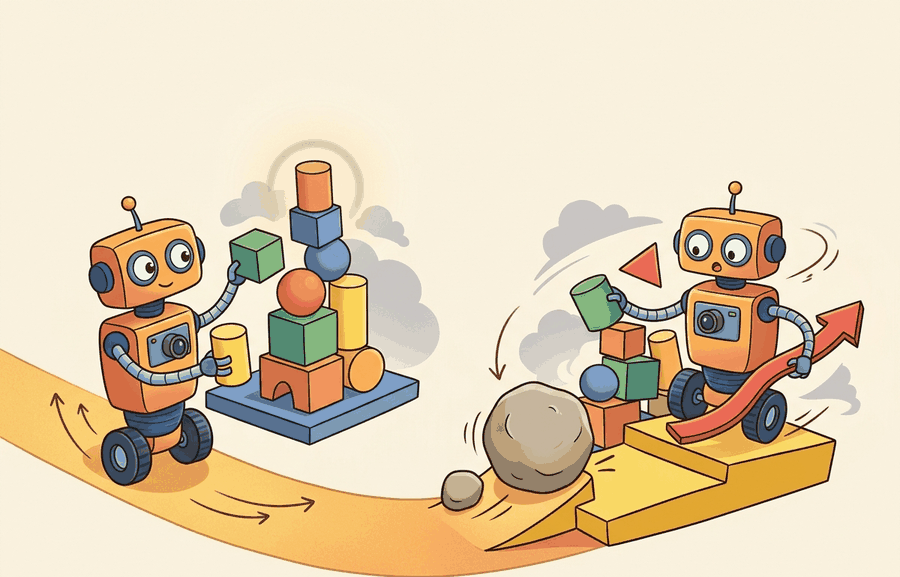

"The first term builds the parts. The second term asks them to survive each other."
A Two-Term Embodied Curriculum

This section builds directly on the one-semester compressed schedule described in section 60.2, which establishes the baseline arc that the two-semester split extends. The research-seminar track in section 60.4 then picks up where this sequence leaves off, showing how a literature-driven thread can run in parallel with the term-two capstone. Instructors who adopt this split will also find the shared evaluation infrastructure in section 60.1 essential for keeping term-one baselines comparable to term-two results.
A student who can train a perception model in October often cannot explain, in April, why the same model fails when bolted to a real actuator. That gap is precisely what embodied AI demands we close, and single-semester courses rarely have the runway to do it. Splitting instruction across two terms lets perception, planning, and control mature separately before students collide them in a capstone system. A two-semester design maps each chapter to the term where it lands hardest, builds shared evaluation infrastructure that carries baselines from term one into term two, and guides a cohort from isolated modules to a running robot that must survive its own decisions.
The practical decision rule for choosing this format over the one-semester compression in section 60.2: pick two semesters whenever the program can guarantee the interterm artifact survives the break (a maintained repository, a persistent lab machine, or an instructor who owns both terms), because the two-semester payoff comes entirely from that carried-forward baseline; without a guaranteed handoff, a single compressed semester is typically the safer choice.
Picture a February capstone team staring at a 60% success number from last October that none of them can reproduce, because someone bumped the simulator over winter break: that single broken artifact is the difference between a two-semester sequence and two unrelated courses that happen to share a number.
The diagram in Figure 60.3B lays out this sequence as a directed process: semester one produces a versioned baseline, an interterm artifact carries the shared evaluation harness across the break, and semester two must beat that baseline on a harder benchmark while the same evidence schema runs beneath both terms.
The interterm artifact referenced above, a versioned env_config.json that pins the simulator and evaluation settings, is defined precisely in the Theory section below; for now it is enough to know that it is the single file that must not silently change between October and February.
The key question in a two-semester sequence is practical: what must the agent know, what can it observe, what action is available, and what evidence shows that the action worked under the stated conditions?
Two-semester sequence should be judged by the action it improves. A section claim is strong when it names the decision, the measurement, and the failure mode before a larger model or simulator is introduced.
Theory
For Two-semester sequence, the practical design rule is to make the interface inspectable before optimization begins: inputs, outputs, units, latency, bounds, and failure labels should all be visible in the saved artifact.
The mechanism that makes a two-term sequence cohere is a versioned interface contract carried across the semester break. Concretely: term one freezes the observation space (e.g. a Franka Panda's 7 joint angles plus a 224x224 wrist-camera RGB tensor), the action space (delta end-effector pose), the MuJoCo MJCF scene hash, and the eval seed list inside env_config.json. Term two cannot redefine any of these without invalidating the term-one 60% push-T baseline it must beat, where push-T is a standard manipulation benchmark in which the robot pushes a T-shaped block onto a target pose. The log that reveals a bad handoff is a diff on env_config.json: if physics_timestep or mjcf_version changed between October and February, the contact dynamics shifted and the cross-term comparison is void.
Step-Through: term-one to term-two baseline handoff check
Trace the cross-term comparison gate with concrete numbers. Term one freezes env_config.json with physics_timestep = 0.002, mjcf_version = "panda_v3", and eval_seed_list = [0, 1, 2], then logs a push-T baseline of 60.0% success (12 of 20 scenes). In February a term-two student runs the new language-conditioned policy and reports 71.0% success. Before accepting the +11.0-point gain, run the gate: (1) diff the config. physics_timestep still 0.002, OK. mjcf_version reads "panda_v3", OK. eval_seed_list reads [0, 1, 2], OK. (2) Re-run the term-one baseline under the unchanged config: it returns 60.0% (12 of 20), matching the October artifact exactly, so the harness is intact. (3) Now the comparison is valid: 71.0% - 60.0% = +11.0 points, a real improvement. Counter-case: had the diff shown physics_timestep = 0.005, the contact dynamics would differ, the re-run baseline might land at 54.0%, and the apparent +11.0-point gain would be an artifact of a softer simulator, not a better policy. The gate rejects the comparison.
Worked Example
For Two-semester sequence, keep one concrete rollout in view. A sensor reading becomes an estimate, the estimate constrains an action, the action changes the world, and the next observation confirms or contradicts the assumption. The section's idea is useful only if it improves that loop.
For Two-semester sequence, the small contract exists to expose the teaching artifact before tooling takes over. Use notebooks, simulators, shared logs, rubrics, and capstone studios only when they preserve the same observation, action, metric, and failure fields.
Practical Recipe
- Fix the sensor modality, robot embodiment, and simulator before writing any policy: a Franka Panda manipulation task and a Unitree Go2 locomotion task require different observation spaces, action dimensions, and contact models, so conflating them poisons every downstream comparison.
- Build a scripted or proportional-control baseline first. On a MuJoCo push-T task (a standard manipulation benchmark in which a robot must push a T-shaped block onto a target pose), the hand-coded pusher typically achieves 35-45% success; if your learned policy cannot beat that threshold after 1M environment steps, the fault is almost always in the reward definition or observation normalization, not in the architecture.
- Add a learned policy (behavior cloning from Open X-Embodiment demonstrations (a large open dataset pooling teleoperated robot trajectories across many labs and embodiments), or Proximal Policy Optimization (PPO) with a 64-unit MLP critic) only after the scripted baseline is logged and versioned in
results/baseline_v0/.
Checkpoint
So far: fix the embodiment and simulator first, log a scripted baseline as the floor to beat, then add a learned policy only after that baseline is versioned, before moving on to failure classification and sim-to-real checks.
- Classify every rollout failure before term two begins: perception error (object pose off by more than 2 cm), state error (joint limit hit), planning error (subgoal sequencing fault), control error (tracking error above 0.05 rad), or evaluation error (scene reset drift). Unclassified failures compound across semesters.
- Run at least one sim-to-real transfer check or domain-randomization sweep before treating a simulated success rate as a reliable predictor; MuJoCo contact parameters tuned for one gripper (Robotiq 2F-85) routinely overfit, and the same policy on a Schunk WSG-50 can drop 20-30 percentage points without any architectural change.
Each of those recipe steps guards a single interface, but the recipe only pays off if you trust the interface before the score; the failure mode below is what happens when that order is reversed.
The common mistake in Two-semester sequence is to trust a component score before checking the closed-loop interface. The failure usually appears where state, timing, authority, or evaluation context crosses a module boundary.
A common design error is treating term two as a fresh start with more advanced material. In embodied AI, that assumption fails. The physical loop (sensing, estimation, action, feedback) runs identically in both terms. Term two cannot ignore the contact dynamics, observation schemas, and baseline metrics that term one established. A robot does not reset its joint limits when the academic calendar changes. Term two must extend term one's evidence artifacts. The same simulator preset, the same evaluation harness, and the same baseline success rate form the fixed reference against which term-two methods must show measurable improvement.
A team using Two-semester sequence starts by writing the task panel, not by picking the largest model. They keep a baseline run, a maintained-tool run, and a perturbation run in the same result folder. The comparison is accepted only when the action trace, metric, and failure labels come from one script.
Real-World Application: graduate robotics curricula
Stanford's CS237A/CS237B (Principles of Robot Autonomy I and II) splits an autonomy sequence across two terms, with the second term reusing a persistent ROS-based stack and benchmark from the first so that planning, perception, and control modules accumulate rather than reset. The shared simulator and evaluation harness let a term-two capstone team measure improvement against the same scenes their term-one project was scored on, exactly the interterm-artifact discipline this section prescribes.
When two-semester sequence feels abstract, ask what would be different in the next frame of video, the next robot state, or the next safety margin.
Three active directions are reshaping how two-semester sequences can connect classroom infrastructure to the research frontier. (1) Cross-embodiment generalization via shared policy representations: large behavior-cloning models trained across heterogeneous robot datasets are now producing zero-shot transfer to unseen embodiments; the pi0 model (Black et al., Physical Intelligence, 2024) and the Octo generalist policy (Ghosh et al., 2024) both demonstrate that a shared action representation trained on Open X-Embodiment data can outperform single-robot specialists, making the Open X-Embodiment benchmark a natural term-two evaluation target that reuses term-one imitation-learning infrastructure. (2) World-model-accelerated curriculum design: trajectory-level world models such as UniSim (Yang et al., 2024) and DIAMOND (Alonso et al., 2024) generate synthetic rollouts that can fill the data gaps between a term-one demonstration set and a term-two distribution-shift benchmark, giving instructors a principled way to extend the shared evidence schema without buying additional robot time. (3) Verifiable safety constraints in learned policies: formal verification applied to neural policies (e.g., SafeRL-Kit, Berkenkamp lab, 2025) is beginning to produce certificates that hold across sim-to-real gaps, which means term-two capstones can require a safety certificate alongside a success-rate number, raising the evidentiary bar. Open problem for a PhD student: none of these directions yet produce evaluation protocols that are invariant to simulator version; designing a benchmark suite where the same policy achieves a certified bound under MuJoCo 3.x, Isaac Lab, and Genesis simultaneously, while keeping the evaluation script under 200 lines, remains an unsolved curriculum and systems challenge.
For Two-semester sequence, can you name the observation, action, protected assumption, success metric, and one likely failure case? If any field is vague, rewrite the contract before adding model complexity.
Topic-Native Deepening
A two-semester sequence gives the book room to breathe. The first term establishes the physics, estimation, simulation, and policy-learning foundations; the second moves into language, world models, safety, and longer capstones without compressing everything into one overloaded arc.
The course-design challenge is coherence across the handoff. The second term must extend the same loop rather than opening a second disconnected subject. This is called the term-boundary forgetting problem, and in practice it is typically the reason a two-semester sequence underperforms a well-run single-semester compression on capstone quality: the extra term only pays off if the handoff is preserved, and unpreserved handoffs are the most visible way that payoff is lost.
Why the physical loop forgives nothing
A course that forgets its own term-one baseline is not a two-semester sequence: it is two disconnected courses wearing the same syllabus number. In embodied AI the consequences are physical. A student who re-derives sensor fusion from scratch in week 17 is not extending a real robot; they are rebuilding scaffolding while the capstone deadline advances. A physical platform has no patience for conceptual restarts. Joint limits, contact timing, and actuator saturation stay the same in February as in October. A term-two demo that exposes a gap in state-estimation intuition earns a failing grade that no argument reverses.
The mechanism is representational decay across the break. Without a retrieval event, declarative knowledge of Kalman gain (the weighting term that decides how much a new sensor reading should correct the current state estimate), reward shaping, or observation normalization decays below fluent-use threshold within six to eight weeks. A pinned simulator preset, data card, and evaluation script supply the retrieval cue: re-running the term-one baseline reactivates the procedural knowledge attached to it, restoring working memory before the new material demands it.
Representational decay works like a muscle that has not been loaded for two months: the athlete still knows, abstractly, how to perform a deadlift, but the stabilizer coordination and proprioceptive calibration have faded below the threshold for safe heavy work. Re-running a term-one baseline script is the equivalent of a warm-up set at light weight: it reloads the motor pattern before the heavy term-two lift begins. Skip the warm-up and the student either re-derives everything from scratch (wasted time) or attempts the advanced load on cold, unreliable intuition (failed demo).
Consider a specific case: a 15-week semester one at a graduate program covers Kalman filtering (weeks 3-4), MuJoCo simulation (weeks 5-7), PPO-based locomotion control (weeks 9-11), and behavior cloning from 500 human demonstrations (weeks 12-14), ending with a push-object baseline that achieves 60% success on a fixed set of 20 evaluation scenes. Semester two opens by importing that baseline directly: students extend it with a CLIP-conditioned language goal encoder (weeks 2-4), where CLIP is a vision-language model that maps images and text into a shared embedding space so a natural-language goal can condition the policy, replace the fixed scene set with a procedurally generated benchmark of 200 scenes (week 5), and close with a capstone that must beat the semester-one 60% baseline under the harder distribution. The numeric anchor forces honest comparison and prevents the second semester from becoming a disconnected demo showcase.
Real two-semester sequences that maintain coherence typically share a single simulator preset, a fixed evaluation harness, and a versioned data card across both terms. Carnegie Mellon's 16-831 (Statistical Techniques in Robotics) and Stanford's CS237B (Principles of Robot Autonomy II) both use a persistent benchmark environment so that term-two results are directly comparable to term-one baselines (as of 2024). Without that anchor, students optimize for demo quality rather than measured improvement.
Two-semester sequence becomes teachable once the student can state the operative variables, the decision boundary, and the evidence artifact. The section should therefore be read together with Part V and Part VIII, where the same loop is developed from adjacent angles.
Let semester one build foundation set \(F\) and semester two build extension set \(E\). The sequence works when prerequisite edges form a sparse DAG (directed acyclic graph, a dependency graph with no cycles) from \(F\) to \(E\), not a tangled graph that forces constant review of forgotten assumptions.
This is why the first semester should overinvest in frames, interfaces, data cards, and evaluation discipline. Those concepts quietly support everything interesting that happens later. In practice, a cohort that skips this groundwork spends 60-70% of term-two time re-debugging term-one assumptions rather than building. A cohort that invested in it spends that same time on genuine extension, producing roughly three times as many novel experiments by year's end. The scale difference is sharper than it sounds. Without a pinned baseline and shared evaluation harness, a typical team burns around 40 hours just to reproduce its own term-one success rate before extending it. With those artifacts in place, that same reproduction takes under 20 minutes.
- Use term one for perception, dynamics, control, state estimation, simulation, RL, and imitation.
- End term one with a modest integrative project that proves students can close the loop.
- Open term two with a brief refresh, then add language, Vision-Language-Action models (VLAs), planning, 3D representation, and deployment topics.
- Run a larger second-term capstone that can draw from both terms without re-teaching prerequisites.
- Keep one shared evidence schema across both semesters so artifacts remain comparable.
Pin the MuJoCo or Isaac Lab XML/USD scene file and the gym.make version string in a env_config.json committed alongside the term-one baseline; even a minor simulator update (e.g. MuJoCo 3.1 to 3.2) can shift contact dynamics enough to change success rates by 5-10 percentage points, making term-two comparisons invalid. Store the config with "mjcf_version", "physics_timestep", and "eval_seed_list" fields so that any term-two student can reproduce the term-one 60% baseline with a single python eval.py --config env_config.json call before extending the policy.
| Dimension | What To Specify | Why It Matters |
|---|---|---|
| Term one | Foundations, control, state estimation, simulation, RL, imitation | Technical floor and first integrative project. |
| Interterm artifact | Baseline system plus replay and postmortem | Prevents term-two amnesia. |
| Term two | Language, planning, world models, safety, deployment, frontier topics | Advanced synthesis. |
| Final deliverable | Research-grade capstone with proposal and defense | Uses both halves of the sequence. |
def validate_sequence(payload: dict[str, object]) -> dict[str, object]:
assert payload, "payload must not be empty"
return payload
# Two-term sequence card.
sequence = {
"term_one_project": "simulator-based mobile manipulation baseline",
"term_two_project": "language-conditioned embodied capstone",
"shared_evidence_schema": True,
}
print(validate_sequence(sequence)){'term_one_project': 'simulator-based mobile manipulation baseline', 'term_two_project': 'language-conditioned embodied capstone', 'shared_evidence_schema': True}validate_sequence guard asserts a non-empty payload, then echoes the two-term sequence card whose shared_evidence_schema: True flag is the field that must stay identical across both semesters.The expected output should reveal continuity across terms. If the evidence schema changes between semesters, students will struggle to connect the advanced work back to the foundations.
After the from-scratch contract is clear, the practical route uses Same book stack plus course project repositories, CI, shared data cards, simulator presets. The payoff is that standard interfaces, logging, batching, and replay support move from ad hoc glue code into maintained infrastructure, while the evidence schema stays the same.
The strongest two-term designs keep term-one artifacts alive as baselines for term two. That makes progress legible and reduces the temptation to discard hard-won infrastructure every semester.
A frontier teaching opportunity is to let term-two students reproduce or stress-test a current research claim using the infrastructure they built in term one. That is how the sequence becomes a research pipeline instead of two classes.
For Two-semester sequence, the artifact should show the course-design decision, the evidence students must produce, and the failure mode that would trigger a revised assignment or rubric.
Project Ideas
Beginner (weekend): Gymnasium locomotion baseline. Train a PPO agent on the HalfCheetah-v4 Gymnasium environment using Stable-Baselines3 and log episode reward, episode length, and one labeled failure category per rollout. The key challenge is writing an evaluation harness that saves a versioned result artifact so the run can serve as a reproducible term-one baseline for future comparison.
Intermediate (1-2 weeks): MuJoCo push task with behavior cloning warm-start. Record 200 scripted demonstrations on the MuJoCo push-T task, pre-train a behavior cloning policy, then fine-tune with PPO and compare success rates against the scripted-controller baseline. The key challenge is keeping the simulator preset, evaluation seed list, and observation normalization identical across all three training stages so the comparison is valid.
Intermediate (1-2 weeks): ROS2 simulation-to-real handoff audit. Build a simple pick-and-place cell in Isaac Lab, export the trained policy to a ROS2 node, and run the same 20-scene evaluation suite first in simulation and then on a real or PyBullet-mirrored robot arm. The key challenge is quantifying the sim-to-real gap per failure category (perception error, control error, reset drift) so that term-two students inherit a documented gap estimate rather than a single aggregate success rate.
Lab: measure how a simulator bump invalidates a cross-term baseline
Goal: see for yourself how a minor simulator change shifts a success rate enough to void a term-over-term comparison, the failure this section warns about.
Tools needed: Python, gymnasium, mujoco, and stable-baselines3 (pip install gymnasium "gymnasium[mujoco]" stable-baselines3). A CPU is sufficient for a short run.
Steps and what to vary: (1) Train a small PPO agent on HalfCheetah-v4 for about 200k steps and save it as your "term-one baseline." (2) Write an eval.py that runs 20 fixed-seed episodes and writes mean reward to baseline_v0.json, recording the MuJoCo version and physics_timestep. (3) Re-evaluate the same frozen policy after changing one physics field: set the environment's frame_skip or integrator timestep to a slightly different value (for example, multiply the timestep by 1.25), keeping the policy weights identical.
What to observe: compare mean reward before and after the timestep change. The policy weights never changed, yet the score moves, often by several percent or more, because contact and integration dynamics shifted. Note how a term-two "improvement" smaller than this swing would be indistinguishable from a simulator artifact, which is why the interterm contract pins physics_timestep and mjcf_version. Budget 15 to 30 minutes once the training run is cached.
- Two-semester sequence matters when it changes an embodied agent's action under a stated observation and metric.
- Use the first term for foundations and the second for integrated systems and capstones.
- Strong evidence is saved as one artifact containing the baseline, the maintained-tool path, the metric panel, and labeled failures.
Design a method-matched experiment for Two-semester sequence. Specify the environment, observation schema, action interface, metric, and one perturbation that targets the section's core assumption.
Section References
Anderson, L. W. and Krathwohl, D. R. A Taxonomy for Learning, Teaching, and Assessing. Longman, 2001.
Use for designing assessments that move from recall to analysis, creation, and evaluation.
Biggs, J. Teaching for Quality Learning at University. Open University Press, 1999.
Use for constructive alignment between learning outcomes, activities, and assessment.
What's Next?
Next, continue with the following teaching section, where the Two-semester sequence contract becomes a concrete course-design decision.